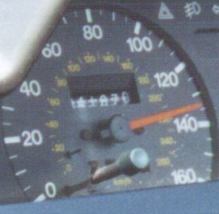

|
 |
Travelling at 120 mph was great, the car felt very stable, I've lowered it 35mm with up-rated springs which probably helps. It almost felt like it squatted right down and just got on with it. 134 mph was a very sweaty affair, a cross between "Bloody Hell look at this" and "Oh my God!!". Certainly got your heart going!! Going under bridges was just a flash and a whoosh. Amazing going past cars that must have been doing 100 mph as if they were standing still. There was only certain times on the Autobahn it was clear enough to try it, hence no attempt to go faster down hill!! Just make sure you up rate your brakes though as those dastardly Germans just pull out in front of you, that's when burning brake pads are not the strongest smell in the cabin!! |